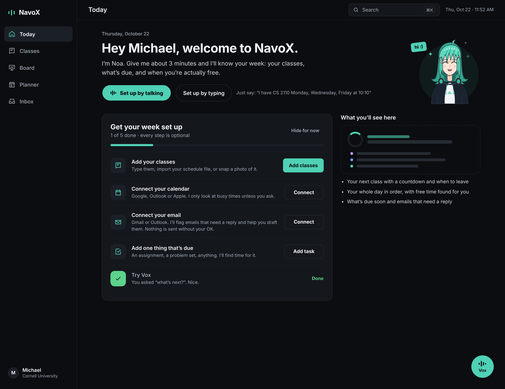
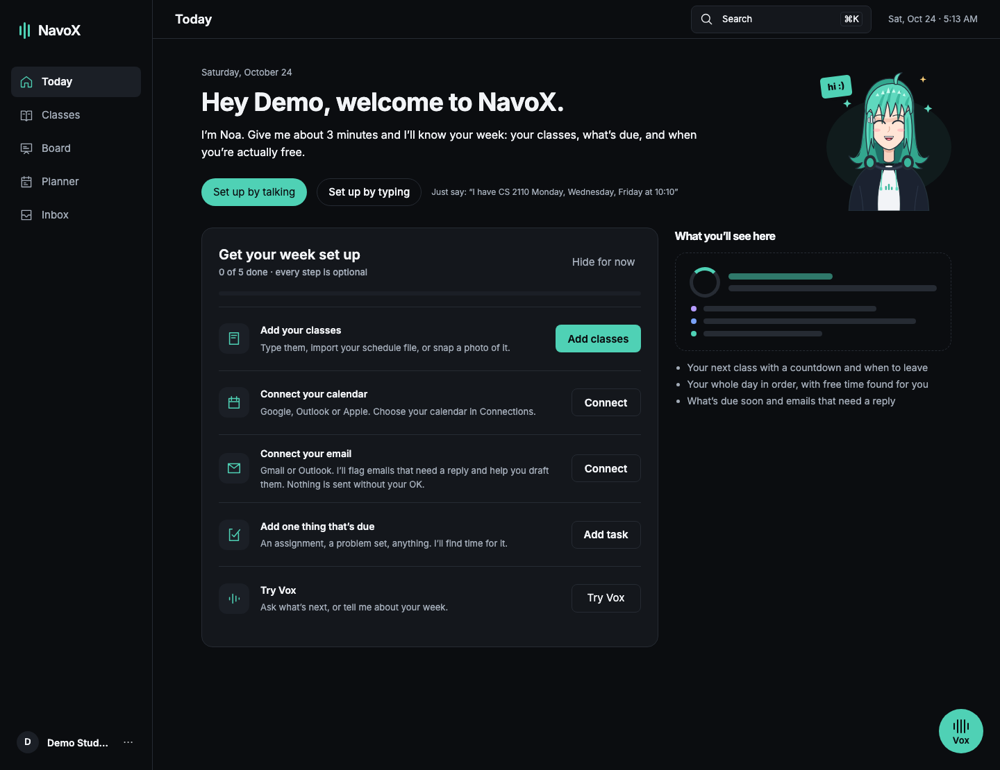
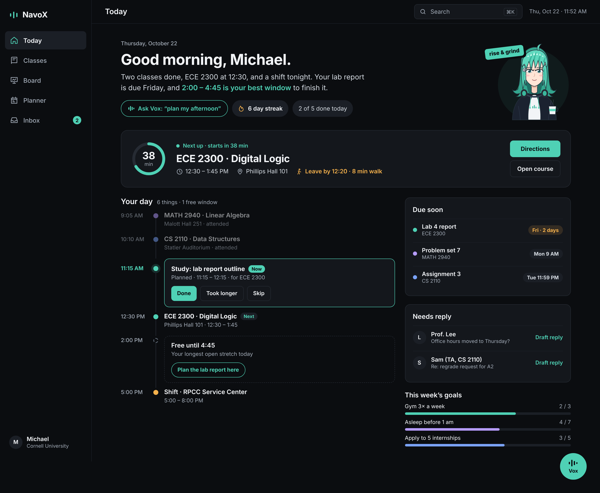
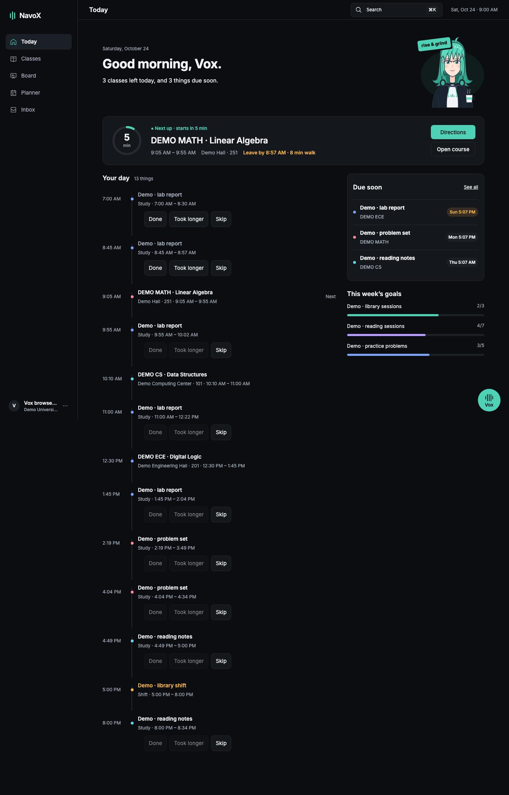

Source: the user’s 24 October 2026, 19-page redesign spec. These are progress comparisons, not final acceptance. Real persisted demo data differs from the illustrative names/times. The Today clock is controlled for the screenshot; physical-phone checks remain pending.


Still pending: best-free-window suggestions, Vox request chip, streak chip, complete late-night/alarm composition and all downstream workflows.


375px mobile browser emulation, real rented voice provider, synthetic microphone. No audio track. Same call and conversation across Classes, Planner and Today; clean hangup. No login credentials were recorded.